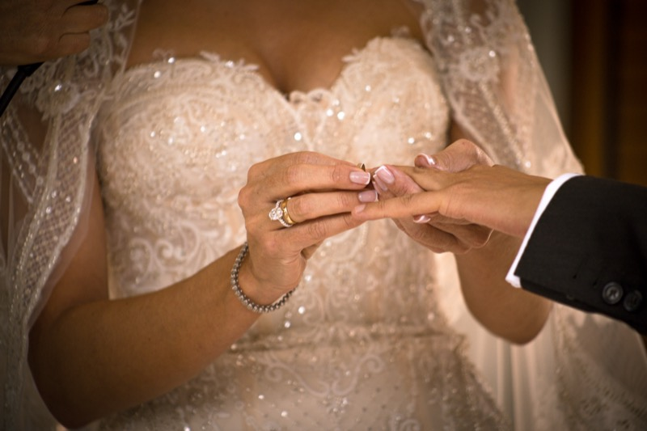
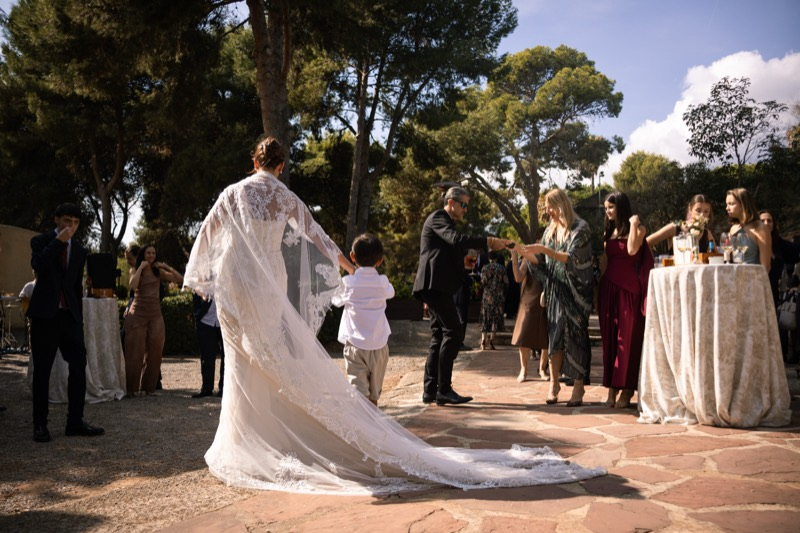
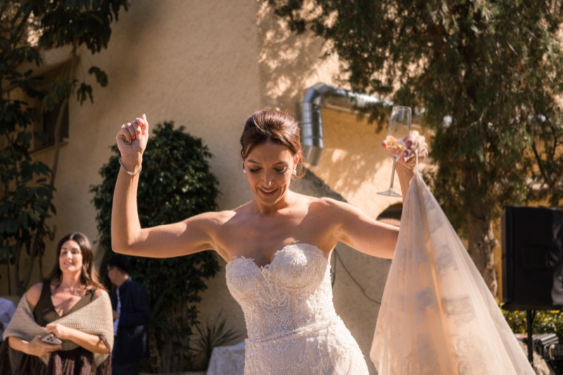
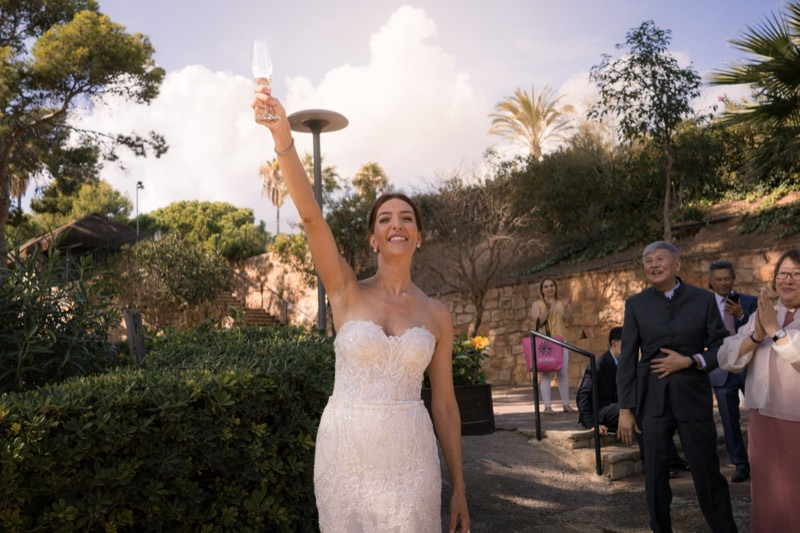
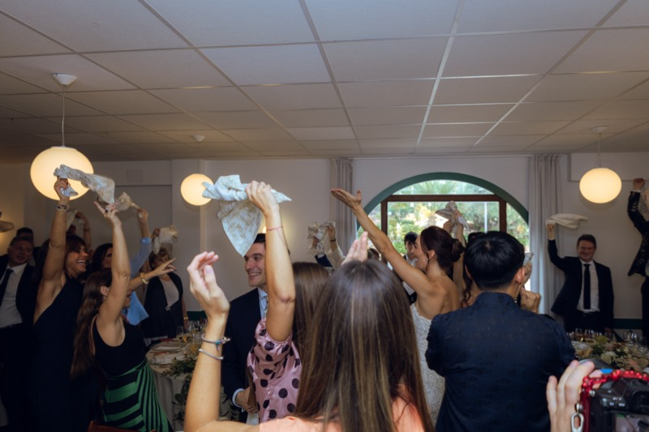
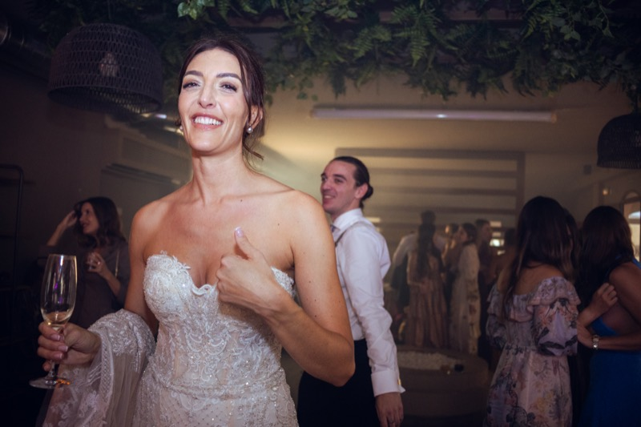
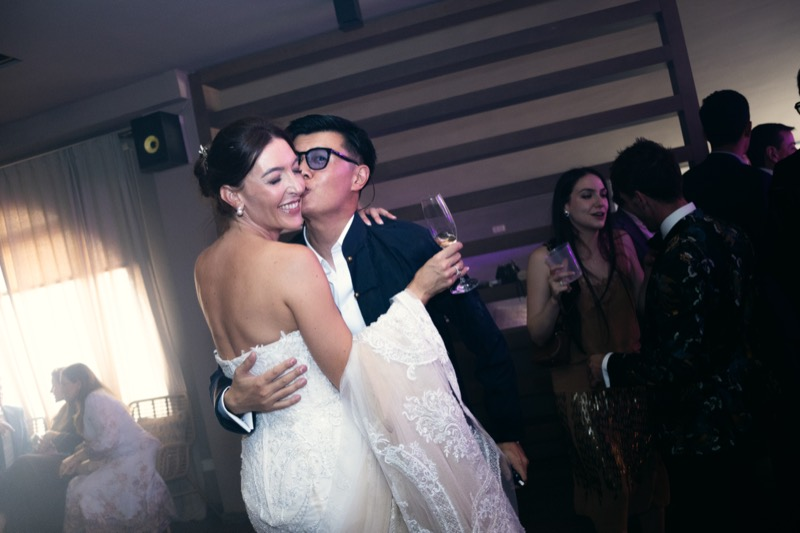
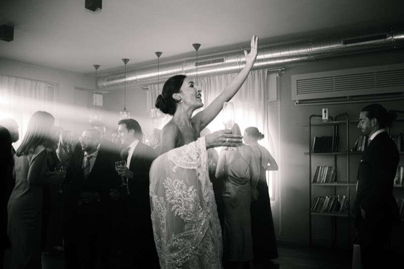

Fotógrafo de eventos en Valencia
Bodas, fallas, conciertos y fiestas. Fotografía natural y documental que cuenta la emoción de verdad, sin poses forzadas.
Para quién
¿En qué te puedo ayudar?
Bodas
Del primer momento a la fiesta: ceremonia, cóctel, banquete y baile, con un estilo natural y sin poses forzadas.
Fallas
Plantà, ofrenda, mascletà y cremà. Fotos para tu comisión, el llibret y las redes de la falla.
Conciertos
Directos con luz de escenario para grupos, salas y festivales.
Fiestas y celebraciones
Fiestas populares, cumpleaños, comuniones y celebraciones privadas o de empresa.
Bodas
Fotógrafo de bodas en Valencia
Una boda real en un jardín mediterráneo, de la ceremonia a la última canción: así es como cuento un día entero.















Fallas
Fotógrafo de fallas en Valencia
La pólvora, el monumento, la ofrenda y la emoción de la cremà. Fotos para que la comisión recuerde su año fallero y tenga material para el llibret y las redes.
- Actos sueltos o toda la semana fallera
- Fotos para el llibret y las redes de la falla
- Retratos de falleras, falleros y comisión


Fiestas y celebraciones
Fiestas que merecen recordarse
Fiestas populares, cumpleaños, comuniones o la cena de empresa: me muevo entre la gente sin que se note y capto el ambiente tal y como fue.
Contar mi celebraciónCómo trabajo
Tres pasos, sin complicaciones
- 01
Cuéntame
Rellena el formulario o escríbeme por WhatsApp: fecha, lugar y qué tienes en mente.
- 02
Propuesta
En menos de 24 h te envío una propuesta adaptada a lo que necesitas, con precio cerrado.
- 03
Sesión y entrega
Hago las fotos y te entrego una galería online con la selección editada, lista para compartir.
FAQ
Preguntas frecuentes
¿Qué estilo de fotografía haces en eventos?
Natural y documental: estoy atento a lo que pasa sin interrumpir, para que las fotos cuenten lo que se vivió de verdad. Si hace falta, también hago retratos y fotos de grupo.
¿Cubres las fallas enteras o actos concretos?
Las dos cosas. Puedo cubrir un acto (la plantà, la ofrenda, la cremà…) o acompañar a la comisión toda la semana fallera. También preparo fotos para el llibret.
¿Cuánto tardas en entregar las fotos?
Recibes un adelanto en pocos días y la galería completa editada en 1–2 semanas. En bodas te confirmo el plazo exacto en la propuesta.
¿Cómo reservo la fecha?
Escríbeme con la fecha y el lugar. Si estoy libre, te envío la propuesta y la fecha queda reservada al confirmarla. En bodas y fallas conviene hacerlo con tiempo.
¿Te desplazas fuera de Valencia?
Sí, a cualquier punto de España. El desplazamiento se incluye en el presupuesto desde el principio.
Presupuesto en 24 h
¿Hablamos de tu proyecto?
Cuéntame qué necesitas y te envío una propuesta a medida, sin compromiso.
- Respuesta personal en menos de 24 h
- Propuesta clara, sin letra pequeña
- Valencia y alrededores, y desplazamientos